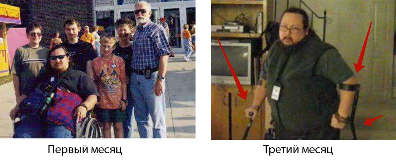

Дешевле вылечить суставы 1 раз - чем лечить их
постоянно!
Артроз сделал меня инвалидом за пару месяцев, а
с помощью 5 растений я быстро
восстановил хрящевую ткань и суставы
Хочу поделиться с Вами своей историей, как я, будучи здоровым
человеком, за 2 месяца сел в инвалидное кресло, а после быстро
вылечился и встал на ноги!

Меня зовут Алексей Николаевич Макарчук, мне 46 лет. Никогда в
жизни не мог подумать, что заболевание суставов это очень
серьезно, я, как и каждый человек, всегда думал: “Я когда-нибудь
сяду в инвалидное кресло? Да нет, со мной такого точно не будет…”
Так, наверное, читая эти слова, думает каждый… но я недооценил
обычную боль в суставах…
Началось все так, в самый обычный день, я шел на работу и
почувствовал в коленях не очень сильную, но какую-то резкую,
неприятную пронзительную боль. Поначалу, естественно, не придал
этому никакого значения, мало ли где может кольнуть, заныть – само
пройдёт, ибо всегда всё как-то само проходило, рассасывалось,
заживало и т.д. Но в этот раз не прошло, а очень даже наоборот,
через пару месяцев колени начинали болеть при обычной ходьбе, и с
каждым днем мне становилось все хуже и хуже.
Я решил, что у меня перенапряг суставов, от активной жизни (работа
на ногах, занимался в то время спортом) подумал, что надо
отдохнуть, взял отпуск, чтобы колени максимально разгрузить, мазью
какой-нибудь помазать, и все точно-точно пройдет. Наверно многие
уважаемые читатели в своих случаях рассуждали так же. Но от таких
мыслей и мазей легче не становилось, а боли усиливались, при чем
достаточно быстро за короткий промежуток времени, в итоге дошло до
того, что я просто перестал вставать на ноги через месяц, и я стал
передвигаться по квартире в инвалидном кресле, уходила суточная
доза обезболивающего — две таблетки минимум.
Одним словом, ситуация из как казалось небольшой неприятности
уверенно и быстро переходила в страшную реальность, я даже
представить не мог, что уже через несколько месяцев не смогу
вставать на ноги из-за страшной боли!
Если заболел – надо идти к врачу, он знает про болезни много,
он будет их лечить до самой вашей смерти, это его работа

Как ни верти, а пришлось идти к врачу, жена моя настояла на этом.
Терапевт отправил меня к ревматологу, попасть к которому мне
удалось через месяц с лишним, очередь однако, не один я суставами
маюсь, нас таких оказалось много. Встретила меня ну очень пожилая
врач, ничего не говоря отправила меня на рентген и анализы
крови/мочи. На втором приеме за пару минут поставила мне диагноз —
какой-то артроз, первичный или вторичный сейчас уж точно не помню,
да и не важно это.
Ну, диагноз ладно, мне же интересно не как это называется, а как
от этой беды побыстрей избавиться и так, чтобы потом рецидивов не
было? И вот тут меня ждали неприятные открытия, причиной этой
напасти бабушка-врач мне объявила мой возраст! Так и сказала: «Это
у вас возрастное». Какой возраст?! Мне всего сорок шесть! Моей
дочке 2 годика, я молодой папаша, а не старый ревматик, то есть
артрозник! Но ещё больше меня «порадовали» так это рекомендации по
лечению, их было три:
Первое – снять с ног все физические нагрузки, а их и так уже давно
нет, боль быстро отучает хвататься за тяжести.
Во вторых, надо мазаться согревающей мазью, кои по телевизору
каждый день с утра до вечера рекламируют. Я завидую иногда людям
внушаемым, им скажи, мол, мажься и пройдёт, они мажутся и
проходит, а мне все понять надо, как мазь с минимальной
активностью может проникнуть сквозь кожу, всякие там мягкие и
соединительные ткани, пробраться внутрь сустава и что-то там
вылечить, вот кто мне объяснит физику этого чудесного процесса? Да
и мажу я уже давно, не один тюбик измазал, всё без толку.
Ну и третья рекомендация, пить какие-то таблетки, которые
способствуют восстановлению хрящевой ткани, читаем внимательно —
не восстанавливают, а только лишь способствуют. И всё! Идите,
терпите, деньги будут — заходите...
Выйдя от «медицины», мы поняли, что лечить меня там готовы, не
отказываются, а вот вылечивать нет. И как нам показалось, они сами
не понимают, в чем причина моего недуга, а если причина
неизвестна, то как недуг устранить? Если таблетки (недешёвые
кстати) только способствуют, то есть помогают, чему они помогают?
Что должно эту ткань мою восстанавливать, с таблетками или без? И
почему оно раньше это делало, а сейчас перестало? Сплошные
вопросы... Конечно, есть ещё вариант отнести свои деньги в платные
клиники, но что-то подсказывало, что результат будет тот же,
только дороже. Ну не верю я ни в платную медицину, ни в платное
образование. Ведь проблема не во враче, пенсионерка она в районной
поликлинике или помоложе дама в модном МЦ, а в самом подходе к
проблеме. Как можно лечить что-то, даже не пытаясь понять причину
недуга? Это как ловить серую кошку в темной комнате, может
поймаешь, а может и нет. Но у меня-то болит, мне нужен верный и
стопроцентный способ излечения.
Я упал в депрессию. У меня была паника, я не знал, что мне делать,
я начал опускать руки... Но моя жена, слава Богу, не сдалась, за
что я сейчас ей очень благодарен! Ее фраза была такова: Если
хочешь не лечиться, а вылечиться, то вылечиваться нужно как в
старом советском фильме «сама-сама-сама».
Самолечением заниматься нельзя, это закон, а вот самовылечиванием
– только сам и можешь. Жена стала думать и гадать, как бы с хворью
совладать, до чего-то додумалась и решила на мне опыты провести,
понимая всю негуманность этого акта. И начала с
самообразования.
Интернет конечно — великая вещь, за очень короткий срок можно
ознакомиться и с преданьями старины глубокой и послушать в
реальном времени лекцию профессора из-за океана. Узнать, что там
про суставы написано в китайском «трактате желтого императора», а
что по этому поводу думают йоги, адепты Аюрведы или Веданты, и как
на Руси-матушке кости правили.
Я жене так же помогал искать информацию, так как делать в постели
днями было нечего. Потратив 1,5 месяца на изучение всей доступной
информации о лечении и восстановлении суставов, мы составили для
себя список из пяти природных «бриллиантов», которые в разное
время использовались для лечения Императорами, Царями, Генсеками,
Йогами, Тибетскими монахами, Староверами и много ещё кем.
Первое место занимает «Пихтовое масло». Экстракт пихты является в
чистом виде концентратом молекул, из которых состоят хрящи и
которые с удивительной скоростью восстанавливают эту самую
хрящевую ткань.
«Экстракт акации катеху». Впервые стал использоваться на Алтае.
Фишка акации катеху в ее уникальной возможности разжижать и
выводить солевые отложения. Они моментально делают солевые
«залежи» в суставах более рыхлыми, а после 15-19 дней регулярного
использования полностью растворяют соли в суставах и позвоночнике.
Согласитесь, очень полезное свойство.
«Биогенный прополис» самый быстрый природный противовоспалительный
«препарат». Прополис стремительно уничтожает любой воспалительный
процесс. С незапамятных времен его использовали для лечения
радикулита, ревматизма, полиартрита, подагры и варикоза.
«Сабельник болотный». Он блокирует боль, а так же действует как
иммуностимулятор, восстанавливает в организме аутоиммунный
процесс, который является отправной точкой заболеваний суставов и
деградации хрящей. Сабельник в разное время использовался для
лечения остеохондроза, артрита и ревматизма. Особенно популярен он
был в царской аптеке Петра Великого, имевшего хронические проблемы
с суставами.
«Красный корень». Я специально написал о четырех лечебных
ингредиентах, пятый – красный корень, не совсем лечит суставы, но
он не менее важен. Красный корень обладает свойством усиливать
действие лекарственных компонентов, раз. И два: обеспечивает
защиту костной и хрящевой тканей. Иными словами первые четыре
растения суставы и хрящи ЛЕЧАТ, а красный корень СОХРАНЯЕТ
достигнутый результат на десятилетия.
Моя жена нашла то, что меня вылечит!
Мы в течении 2х месяцев искали разные средства, в которые входит
данный состав, но поиски были бесполезны. Я лично расстроился, уже
сомневался, что мне что-либо может помочь, любой сомневался бы,
оказавшись на моем месте.
Но моя жена не сдавалась! Она постоянно была в поисках, и как-то
случайно наткнулась на статью доктора с федерального канала,
который рассказывал о средстве, которое восстанавливает любой
хрящ, любой сустав. Мы загорелись, ознакомились с рецептом
средства, о котором идет речь, и состав полностью совпадал с нашим
списком выше! Там и Акация катеху, и Прополис, Пихтовое масло,
Красный корень, в общем весь набор лучших экстрактов для
суставов.
Мы были рады, нашли то, что искали! Но нас настигла еще одна
неприятность, меня уволили с работы, так как калека, как они
сказали, никому не нужен. С деньгами стало очень сложно, так как
зарплата у жены была маленькой. Цена на средство постоянно
плавала, и была достаточно высокой, потому 2 недели, как на
работу, моя жена ежедневно заходила на разные сайты, искала это
средство, не появилось ли оно по доступной цене. И в какой-то день
наконец-то увидела, что его можно выписать на сайте этого доктора
. Представьте, вообще
. Она сразу же сообщила мне, и
я незамедлительно оформил заказ, ибо ну его нафиг – разберут
моргнуть не успеешь! Буквально через минут 10 звонит приятная
девушка, начала подробно рассказывать о средстве, что-то типа:
Препарат действует чуть ли не моментально, уже на 2-ой день
возвращается подвижность сустава, а боль так вообще проходит
через 8-12 часов. Но именно для лечения и закрепления результата
на долгие годы нужен курс – 20-27 дней.
– Девушка, не обижайтесь, но я об этом препарате знаю побольше
вашего, так что не старайтесь. Оформите мне лучше с доставкой 10
штучек геля.
– Извините, но 10 упаковок выписать нельзя. Из-за повышенного
спроса на льготную программу мы предоставляем максимум 5 упаковок
в одни руки.
– Да чтож такое то! Я 2 недели ждал, хотел сразу с запасом
взять... Ну ладно, оформляйте 5…
Я хотел заказать сразу 10, на всякий случай. Всё-таки редкое
средство, которое фиг достанешь еще и
. В конце-концов подарил бы
кому-нибудь, но политика компании жестока –
Не больше 5 штук в одни руки по данной льготе.
В общем разрешили мне заказать только 5 упаковок этого геля,
подтвердили заказ, сказали – ожидайте, приедет ваш заказ по почте
(курьером оказалось будет чуть дольше). Надо сказать, что почтой я
уже давненько ничего не получал, поэтому несколько напрягся.
Все-таки кто её знает, эту почту, потеряют еще мой гель, а мне
потом ещё 2 месяца жди, когда он опять появится по льготам.
К счастью все обошлось. На удивление быстро, всего за несколько
дней, мой заказ уже был в почтовом отделении. Моя жена быстро
забрала посылку домой.
Результаты. Они поразительные!
Я конечно понимал, что лечение будет относительно быстрым, курс то
всего 20-30 дней, но что эффект я почувствую НАСТОЛЬКО быстро
стало для меня сюрпризом! (ниже я расписал как я чувствовал себя
через 1 неделю, через 2 недели и т.д).
Помазав колени перед сном, я лёг спать на спину, как обычно, ибо
по другому я спать отвык – больно. Проснулся я уже на ПРАВОМ боку,
упираясь больными суставами в постель, а боли то не было! Я
аккуратно начал поднимать мои ноги вверх, а боли всё не было! За 8
часов сна с этим гелем боль исчезла! Я поднялся, опустил ноги к
полу, и хотел встать на ноги, щёлк-щёлк отозвались мои больные
колени, и я почувствовал лёгкую боль. Так, ладно, обождём пока с
ходьбой, всё-таки только 8 часов лечения прошло, подумал я.
В инструкции было написано: Наносить на больные суставы 1 раз в
день. Я сразу начал мазаться по 2 раза, чтобы быстрее шёл процесс.
Прикладывая целлофан для сохранения тепла.
Дневник моего исцеления
Я потратил полгода, чтобы найти это средство, и ещё 2 месяца ждал,
когда оно станет доступно. Но это того стоило!
В общем, эти мои эксперименты над самим собой дали замечательные
результаты стопроцентного исцеления, сейчас я попытаюсь по дням
восстановить свои ощущения.
8 часов лечения:
в состоянии покоя исчезла боль. Незначительные болевые ощущения
остались при движении.
1 день: боль полностью исчезла. Спали отёки. Могу
сгибать колени, но суставы всё ещё пощёлкивают, побаливают.
7 день: наконец-то пропали щелчки в суставах.
Легко двигаю, сгибаю колени, могу спокойно вставать на ноги, но
ходить пока не рисковал.
14 день: ощущаю себя здоровым! Ходил по квартире,
спускался на улицу на прогулку – никаких неприятных ощущений!
21 день: ощущаю себя замечательно, сделал
пробежку в 1 км и не чувствовал ВООБЩЕ НИКАКОЙ БОЛИ! Я будто
заново родился!
28 день: сдал анализы и сделал рентген плеча и
локтя. Никаких следов артроза! Хрящи в суставах как у 30-ти
летнего пацана. Докторша сказала, что на предыдущем рентгене
скорее всего был дефект, поэтому диагноз Артроз был ошибочным.

Проще вылечить суставы 1 раз - чем лечить их постоянно!
Я потратил много денег на разные средства для восстановления
суставов, на приемы врачей, на обезболивающие, даже ту же
инвалидную коляску. И понял одно - лучше один раз вылечиться и
потратить на курс, грубо говоря, 4-5 тысяч, и это будет намного
дешевле, чем постоянно покупать бесполезные мази, обезболивающие,
таблетки и ходить на приемы к врачам, делать мрт, и всякие дорогие
обследования. Даже факт того, что можно стать инвалидом, лучше раз
купить курс и вылечиться, чем перестать ходить через какое-то
время, задумайтесь… Также я попадался на разные лекарства, которые
на самом деле развод, не тратьте время зря, поверьте моему
печальному опыту :( Я вам рассказал свою историю, а решение за
Вами. Добра всем!!!
P.S. Дорогой читатель, спасибо Вам, что вы
дочитали до конца эту статью, мне приятно. В благодарность за
терпение, ниже вы можете оставить заявку на получение геля. Сейчас
он раздается примерно 1 раз в 2 месяца, но
ожидание того стоит, поверьте. Забыл сказать, что
гель называется Fortuflex.
На поиск этого средства у нас ушло полгода, а Вам эту информацию
дарю за 5 минут чтения, так как в первую очередь я человек, и
понимаю что многие, как и я, нуждаются в помощи. Делитесь в
комментариях своими успехами. Если знаете ещё подобные препараты,
обязательно пишите!
Своему выздоровлению я благодарен своей жене, которая не бросила
меня, которая искала способы поднять меня на ноги. Я ее очень
люблю ценю и уважаю!
Акция проходит
до
включительно. На каждый этап выделяется 30 000 единиц препарата
. И он полностью кончается за
3-4 недели. И это при том, что нет никакой рекламы по ТВ и радио.
Люди передают друг другу информацию, советуют друзьям и
родственникам. Даже для нас стало неожиданностью, что информация о
Fortuflexе будет так быстро распространяться.
Поэтому, если вам повезло и вы успеваете до указанной даты, я
рекомендую оставить заявку на Fortuflex как можно скорее.
Повторной программы в этом году уже точно не будет.
На
остаток препарата по льготной программе:
43
шт.
Угадай за какой дверью скидка 50%
34.99
€
69.98 €
Все что Вам нужно — это ввести имя и номер телефона.
Поторопитесь!
У Вас осталось времени:
10
:
00
Поздравляем!
Вы можете забрать средство за
34.99
€!
69.98 €
OK
Поздравляем!
Вы можете забрать средство
OK
 ОБСУЖДЕНИЕ
ОБСУЖДЕНИЕ

Маргарита Дружина / Москва
Обалдеть! Целое исследование провёл! Тебе надо книгу написать,
как бубновский. А то его методы помогают конечно, но пахать надо
мама-не-горюй, работать некогда будет! За рецепт - спасибо,
будем пробовать лечить колени. Дело за малым дождаться, когда
снова раздавать начнут)

Тимур Макиев / Москва
Гель Fortuflex
отличное средство для лечения артроза! Тоже пробовал, хотя мой
врач и не советовал выкидывать деньги. Теперь удивляется.
Прогресс даже он заметил)) Хотя и настаивает, что это массаж
помогает. Но чего-то раньше массаж не особо помогал! Пройду
курс, а там видно будет.
тоже закзаал.
Достоинства
Быстро действует.
Недостатки
Нельзя купить в аптеке, приходится ждать заказ.

Татьяна Дробнина / Ростов
У меня артроз тазобедр, плечи, шейные позв. Живу,
приспособилась. Бассейн, пилатес. Таблетки когда болит сильнее
чем обычно. Но гель Fortuflex что-то новенькое, надо попробовать
темболее , если сравнивать сколько я
на анальгетики спустила.

Валентин Ременский / Раменское
5 лет назад, я вылечил язву желудка и тоже препаратом на
CO2-экстрактах. Щас уже названия не упомню, но похоже это было
как раз этого завода лекарство... как вспомню название -
отпишусь.
Татьяна Прокофьева / Самара
Сидячая работа тоже гробит организм. Вроде не напрягалась,
трудилась в офисе, и вот на тебе. Жутко болят колени, как будто
туда кровь не поступает. Надеюсь гель мне поможет. Мажу третий
день. В состоянии покоя и при хотьбе боли уже нет, что радует.
Но если глубой присед сделать, то есть некоторые болевые
ошущения. Надеюсь скоро пройдут.

Николай Максимов / Ростов
Андрей, спасибо за инфу! А то я уже живу с остеартрозом
коленного сустава 12 лет. Осенью и весной обострения. Сразу в
ход идет терапия. Найз мазь и найз таблетки. Дона в задницу 2
упаковки. Пью попеременно то Терафлекс 3 мес,то Глюкозамин. Вот
Сейчас Артра 6 месяцев. Полгода отдыхаю. Езжу в санатории. Там
или лечебная грязь или озокерит. Гуляю много пешком.
Расслябляться нельзя, а то обезножете. Я уже 12 лет борюсь.
Купил в аптеке собачьи наколенники. А еще мажу всякими мазями
при обострении. Мне все помогает хорошо. Только лекарства надо
менять. Последнего поколения надо. Все конечно дорогое.

Лилия Мельконина / Новосибирск
Я тоже заказала мужу гель Fortuflex после долгих поисков
подходящего средства. Надеюсь, что он поможет... Я вижу, как мой
благоверный мучается... В холода ни присесть, ни пройтись... Мне
средство врач-ревматолог посоветовал. Вот и проверим — работает
или нет. Жду доставки!

Нина Пацуева / Владивосток
Что то дорого...

Людмила Евсеева / Санкт -Петербург
Милая Нина! Если для вас это дорого, то поверьте мне, бывшей
артрознице, значит вы здоровый человек и у вас ничего не болит!
Когда руки болят так, что ложку держишь и слёзы льются, тогда
стоимость геля Fortuflex будет казаться сущими копейками! Тогда
будешь готов любые деньги заплатить, чтобы прекратить эту пытку
хотя бы на время. А за лекарство, которое навсегда избавляет от
этих адских мучений будешь готов душу дьяволу продать! Это я на
личном опыте говорю. Лучше до такого не доводить, а как только
чуть заболело - сразу купировать проблему. То что пережила я
никому не пожелаю, артроз страшная штука
Нина Пацуева / Владивосток
Ну если реально помогает, то нормальная цена у него и без льгот,
тут спору нет. Но поможет ли? Меня шейный остеохондроз допекает,
голова просто трескается порой от боли. Так что что такое боль я
знаю, можете не объяснять) Вопрос то, вылечит ли хваленый гель
или нет? А то может так чисто "ПОНТЫ" очередные?
Людмила Евсеева / Санкт -Петербург
Про остеохондроз не скажу - не страдала. Но по сути остеоходроз
это изнашивание хрящей позвоночника + отложения солей + в
запущенном случае деградация кости позвонков. И всё это гель
Fortuflex может восстановить, так что не вижу причин не
попробовать. Хотя ваши сомнения мне не понятны, если бы мне
сказали, когда меня артроз мучил - "Вон куча го*на, оно поможет!
Ешь!", я бы не раздумывая ела, потому что если есть хоть
малейший шанс - надо пробовать обязательно! А тут тем более
дают, что бы вы убедились в
эффективности средства.
Нина Пацуева / Владивосток
Да херня это все! Ни верю не разу! за месяц никогда артрит не
вылечить, люди годами лечатся и лекарствами и упражениями по
тому же бубновскому и то у них результаты хуже!

Елена Яковлева / Сочи
Ну верить или не верить это ваше право, бога ради. Я за себя
скажу - мне гель вылечил колени. До него тоже перепробовала
вагон разных и мазей, и таблеток, и уколы даже ставили. По
хваленому Бубновскому тоже занималась. Результата с гулькин
нос! Либо вообще не помогает, либо помогает но не надолго. А
после курса Fortuflex я уже четвёртый год о коленях не
вспоминаю! И всем советую и буду советовать!

Валентина Аксенова / Ереван
Выше спрашивали про шейный остеохондроз, так вот, я вылечила
его. Да, Fortuflexом. И да за месяц. Даже чуть меньше, потому
что заказала только 2 упаковки и на полный курс не хватило. Но
уже год как шея меня не беспокоит и головные боли остались в
прошлом.

Нина Дружинина / Рязань
Мне при артрозе назначали колоть Хондрогард целый месяц.
Обошлось мне это удовольствие 9700 рублей! И что вы думаете?
Правильно! 2 месяца всё казалось бы хорошо, а потом началось
заново... Врач сказал "Ну повторите курс, помогает же". Да
нифига себе помогает! Месяц колешься и всего 2 месяца эффект и
так всю оставшуюся жизнь колоться чтоли? Нафиг, решила я!
Каким то чудом узнала про Fortuflex, уже не помню даже как.
Промазалась курс, который на минуточку, обошелся дешевле курса
Хондрогарда почти в 4 раза! И вот уже третий год пошел, а от
артроза даже воспоминаний не осталось. Так что делайте,
ребята, выводы, лечитесь правильно и будет вам счастье. Жаль
тогда конечно не давали
когда я брала. Но лишний
раз убедилась, что средство правда качественное, иначе не
стали бы давать так.

Василий Репчак / Омск
Моя мама имела давнюю проблему с суставом на руке. Когда я
купил маме этот гель, она посмотрела на меня как на
ненормального)). Еще бы, что только не придумают сейчас, чтобы
завлечь клиента, даже средство для суставов сделали из живицы!
Удалось привлечь ее натуральным составом, все же без химии,
вызывает доверие. Начала использовать дважды в день.
И как ни странно, буквально через пару дней использования боли
начали постепенно проходить, а через месяц моя мама смогла без
труда сгибать и разгибать руку. Такого эффекта прежде не
давала ни одна мазь, а она их перепробовала кучу. В общем,
можем сказать что мазь работает, заказал ей на сайте еще 5
упаковок, чтобы она постоянно пользовалась и не запускала свой
артрит. Потому что если не следить за суставами, то дело может
закончиться плачевно. А оно вам надо?
Борис Успенский / Омск
В прошлом я профессиональный спортсмен, поэтому травмы были
частенько. Обычно это были какие-то незначительные вывихи или
растяжения, но несколько лет назад я очень сильно повредил
колено. Некоторое время даже пришлось ходить с костылем.
Никакое лечение практически не помогало, только лишь временно
снимало боль, которая затем вновь возвращалась. А при
физических нагрузках боль становилась просто нестерпимой,
колено распухало и было больно даже ходить.
В результате мне пришлось бросить спорт. Для снятия боли
принимал обезболивающее по несколько раз на день.
Гель выписала жена, которая нашла о нем информацию на каком-то
медицинском форуме. После пары дней регулярного применения
боли стали заметно меньше. Я мог уже спокойно ходить. А еще
через неделю я вообще забыл про обезболивающие таблетки.
Затеяли с женой ремонт в доме, и пока колено меня не
побеспокоило ни разу, даже при физических нагрузках. В
дальнейшем планирую потихоньку вернуться к спорту, но,
конечно, уже буду осторожнее с нагрузками. Колено до сих пор
иногда мажу гелем, но уже чисто в профилактических целях.
Заказали еще парочку по льготе, на жену, чтобы всегда был под
рукой при необходимости.

Наталья Яковлева / Саранск
Мне когда поставили диагноз "Радикулит" я чуть не разревелась.
Какой Радикулит!?!? Мне всего 38! Я же не старая бабка! Не
может у меня быть радикулита! А оказалось очень даже может и
возраст здесь ни причём... И только гель Fortuflex вернул мою
спинку в 16-ти летнее состояние) И никакая я не бабка
радикулитная больше)) Андрей, спасибо что напомнили о
суставах, заказала только что себе ещё гель, для профилактики
лишним не будет! Кому интересно сейчас гель ещё есть в
наличии, но осталось совсем мало, я когда заказывала было на
складе всего 490 упаковки. Так что, кто не успел, тот опоздал
-
официальный сайт геля Fortuflex.

Оксана Березина / Пермь
Ребята, спасибо вам огромное! Вы мне подарили надежду, что не
всё потеряно. Заказала Fortuflex, по результатам обязательно
отпишусь Андрею.